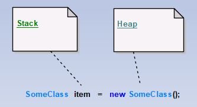

Šio skyrelio tikslas supažindinti su objektų gyvavimo ciklu - kaip kinta objekto būsenos nuo pat jo sukūrimo pradžios iki pat sunaikinimo. Paprastai, išskiriamos šios stadijos:
Atminties išskyrimas objekto informacijai saugoti.
Objekto sukūrimas ir inicializavimas.
Objekto naudojimas ir manipuliavimas jo informacija.
Objekto naikinimas.
Prisiminkime kaip yra sukuriamas objektas (1 pav.).
 1 pav. Objekto sukūrimas.
Kaip matome iš 1 pav., kai kuriame objektą, kairėje lygybės pusėje apibrėžtas objekto pavadinimas (item pavyzdyje) yra adresas steke su nuoroda į heap'e saugomą objekto informaciją, kuri ten įrašoma kai iškviečiamas konstruktorius (dešinė lygybės pusė). Kai objektas tampa nereikalingas, naudota atmintis yra atlaisvinama kitiems objektams saugoti. Už atminties valdymą .NET, JVM, Python aplinkoje atlieka šiukšlių surinkėjas (angl. Garbage Collector). Toliau aptarsime atminties valdymo ypatumus kiekvienoje aplinkoje.
Heap struktūra suskirstyta į tris kategorijas - kartas (angl. generations), valdyti trumpalaikius objektus ir ilgalaikius objektus. Šiukšlių surinkimas, pirmiausiai, atliekamas tarp trumpalaikių objektų ir tik po to tarp ilgalaikių objektų. Heap struktūros kartos:
Karta 0 (angl. Generation 0). Nauji, ką tik sukurti objektai tampa nulinės kartos objektais - trumpalaikiais objektais, kuriuos pirmiausiai bando šiukšlių rinkėjas pašalinti iš atminties. Jei objektas „išgyvena” šiukšlių rinkėjo operacijas, objektas perkeliamas į pirmąją kartą.
Karta 1 (angl. Generation 1). Pirmos kartos objektai rečiau valomi nei nulinės kartos objektai, nes šiai kartai priklauso ilgesnės gyvavimo trukmės objektai. Objektai išgyvenę pirmąją kartą, perkeliami į antrąją kartą.
Karta 2 (angl. Generation 2). Ilgalaikiai objektai, ilgiausiai saugomi atmintyje. Šiukšlių rinkėjas daug rečiau atlieka valymo operacijas tarp šios kartos objektų.
Objekto gyvavimo trukmę apibrėžia daug faktorių: objekto inicializavimo vieta, ar tai laikinas metodo viduje inicializuotas kintamasis, ar jis perduodamas kitam metodui, ar grąžinamas kitam objektui return operatoriumi ir t.t.
Java objektų gyvavimo ciklo būsenos pavaizduotos 2 paveikslėlyje.
2 pav. Java objektų būsenos.
Sukurtas (angl. Created). Objekto, ką tik sukurto, būsena. Ši būsena suteikiama iš karto po new operatoriaus iškvietimo.
Naudojamas (angl. In Use). Objektas turintis bent vieną nuorodą iš steko į save.
Nematomas (angl. Invisible). Objektas neturi ryšių, matomų programai, tačiau galimai turi ryšių su išoriniais resursais.
Nepasiekiamas (angl. Unreachable). Objektas neturi jokių ryšių su kitais programos, OS ir kitais elementais. Šios būsenos objektai yra perduodami šiukšlių surinkėjui.
Atrinktas (angl. Collected). Atrinkto šalinti objekto būsena.
Užbaigtas (angl. Finallized). Laukiantis pašalinimo iš atminties.
Pašalintas (angl. De-allocated). Pašalintas iš atminties.
Python kalboje išskiriamos objekto sukurimo ir sunaikinimo būsenos:
Objekto sukūrimas ir inicializavimas (klasėje apibrėžtu __init__ konstruktoriumi).
Objekto naikinimas, remiantis ryšių skaitliuku. Jei skaitliuko reikšmė 0, objektas naikinamas, jei daugiau 0 - objektas paliekamas.
Daugiau informacijos apie objektų gyvavimo ciklą rasite: